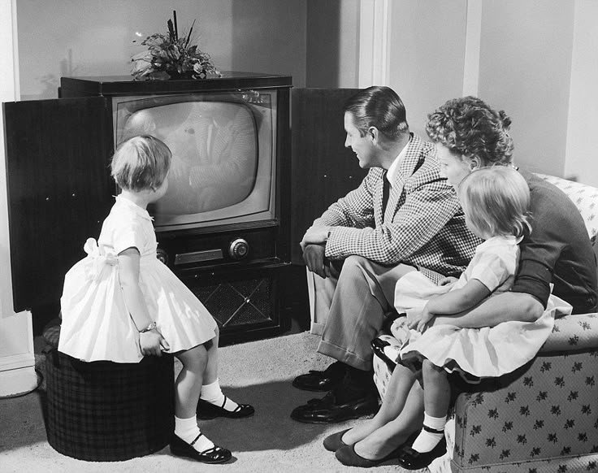
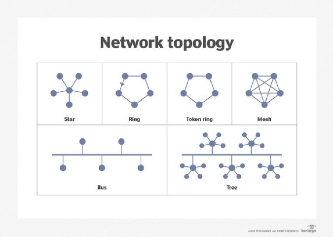

1.1 PRENSA
¿QUÉ ES LA PRENSA?
La prensa es uno de los medios de comunicación más antiguos e importantes. Su función principal es informar a la sociedad sobre acontecimientos relevantes mediante textos escritos, imágenes y noticias.
La prensa puede presentarse en:
- Periódicos
- Revistas
- Prensa digital
Historia de la prensa
Los primeros antecedentes surgieron en la antigua Roma con documentos públicos llamados Acta Diurna. La gran revolución ocurrió con Johannes Gutenberg y la creación de la imprenta en el siglo XV.
Gracias a esto:
- La información comenzó a difundirse masivamente.
- Los libros y periódicos se produjeron más rápido.
- El conocimiento llegó a más personas.
Características de la prensa
- Comunicación escrita
- Difusión masiva
- Información actual
- Publicación periódica
- Uso de imágenes y titulares
Importancia de la prensa
- Mantiene informada a la población
- Promueve la libertad de expresión
- Difunde cultura y educación
- Registra hechos históricos

1.2 CINE
¿Qué es el cine?
El cine es un medio audiovisual que utiliza imágenes en movimiento para contar historias, informar o entretener. Es considerado una de las formas de comunicación más influyentes del mundo.
Historia del cine
El cine nació oficialmente en 1895 gracias a Auguste Lumière y Louis Lumière, conocidos como los hermanos Lumière. Ellos realizaron las primeras proyecciones cinematográficas públicas.
Evolución del cine
Cine mudo
Las primeras películas no tenían sonido.
Cine sonoro
En 1927 apareció el sonido sincronizado.
Cine a color
Posteriormente se incorporó el color a las películas.
Cine digital
Actualmente se utilizan efectos especiales y tecnología digital.
Características del cine
- Uso de imagen y sonido
- Narración visual
- Entretenimiento y educación
- Impacto emocional
- Importancia del cine
- Difunde cultura
- Comunica ideas y emociones
- Influye en la sociedad
- Funciona como medio artístico y educativo
1.3 RADIO
¿Qué es la radio?
La radio es un medio de comunicación que transmite información mediante señales de audio. Permite enviar voz, música y noticias a largas distancias.
Historia de la radio
El desarrollo de la radio fue posible gracias a investigaciones sobre ondas electromagnéticas realizadas por Nikola Tesla y Guglielmo Marconi. En el siglo XX comenzaron las primeras transmisiones radiofónicas.
Características de la radio
- Comunicación auditiva
- Transmisión en tiempo real
- Amplio alcance
- Bajo costo
- Ventajas de la radio
- Información inmediata
- Fácil acceso
- Cobertura amplia
- No requiere internet
Importancia de la radio
La radio fue fundamental para:
- Difundir noticias
- Educación a distancia
- Comunicación en emergencias
- Entretenimiento musical
1.4 TELEVISIÓN
¿Qué es la televisión?
La televisión es un medio audiovisual que transmite imágenes y sonido simultáneamente. Es uno de los medios de comunicación más populares del mundo.
bHistoria de la televisión
El desarrollo de la televisión comenzó en el siglo XX. John Logie Baird realizó una de las primeras transmisiones televisivas exitosas. Con el tiempo, la televisión evolucionó:
- Blanco y negro
- Color
- Señal digital
- Alta definición
Características de la televisión
- Comunicación audiovisual
- Transmisión en vivo
- Programación variada
- Gran impacto social
Tipos de contenido televisivo
- Noticias
- Series
- Documentales
- Deportes
- Programas educativos
Importancia de la televisión
- Informa a millones de personas
- Influye en la opinión pública
- Difunde cultura y entretenimiento
- Permite comunicación masiva

1.5 REDES DE COMPUTADORAS
¿Qué son las redes de computadoras?
Son sistemas que permiten conectar computadoras y dispositivos para compartir información y recursos. Las redes hicieron posible la comunicación digital moderna.
Historia de las redes
El desarrollo de las redes comenzó con proyectos militares y científicos. Uno de los antecedentes más importantes fue ARPANET, creada en Estados Unidos durante la década de 1960. Posteriormente surgió Internet, revolucionando la comunicación mundial.
Tipos de redes
LAN (Local Area Network)
Red local utilizada en hogares y oficinas.
MAN (Metropolitan Area Network)
Red que cubre una ciudad.
WAN (Wide Area Network)
Red de gran alcance como Internet.
Componentes de una red
- Servidores
- Clientes
- Routers
- Switches
- Cables o conexión inalámbrica
Ventajas de las redes
- Compartir información
- Comunicación rápida
- Acceso remoto
- Compartir recursos y archivos
- Importancia de las redes de computadoras
Las redes son fundamentales porque:
- Permiten el funcionamiento de Internet
- Facilitan la comunicación global
- Apoyan empresas y educación
- Hacen posible servicios digitales modernos
CONCLUSIÓN
Los antecedentes de la comunicación representan la evolución de los medios que han permitido transmitir información a lo largo de la historia. Desde la prensa hasta las redes de computadoras, cada avance tecnológico transformó la manera en que las personas interactúan, aprenden y comparten información.
Actualmente, estos medios continúan evolucionando gracias a la tecnología digital y al Internet, formando parte esencial de la vida cotidiana y de la comunicación global.
